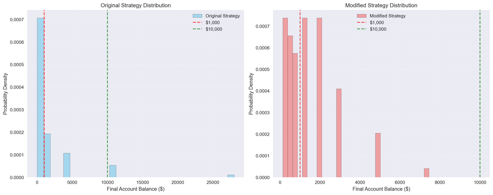

Libraries imported successfully!Simulation Challenge
Generative Models and Monte Carlo Simulation
🎲 Simulation Challenge - Monte Carlo Analysis
Challenge Overview
Your Mission: Create a comprehensive Quarto document that simulates one or two investment strategies, analyzes the results, and demonstrates your ability to present counter-intuitive findings compellingly. Then render the document to HTML and deploy it via GitHub Pages from a new repository called “simulationChallenge.”
Investment Strategy Setup
Strategy 1: Single Coin Flip Investment
Sample results (first 10 simulations): [600.0, 1500.0, 1500.0, 1500.0, 600.0, 600.0, 600.0, 1500.0, 1500.0, 1500.0]
Average final balance: $1140.00Sample results (5 flips, first 10 simulations): [1215.0, 486.0, 486.0, 1215.0, 194.39999999999998, 77.75999999999999, 3037.5, 3037.5, 1215.0, 1215.0]
Average final balance: $1217.92
=== Single Flip Test Analysis ===
Total Simulations: 10
Mean Final Balance: $1140.00
Median Final Balance: $1500.00
Standard Deviation: $440.91
Min Final Balance: $600.00
Max Final Balance: $1500.00
Win Rate (% above $1000): 60.0%Visualization functions defined successfully!Analysis Questions
1. Expected Value Calculation
What is the expected value of the final balance for the single coin flip strategy?
For a single coin flip: - Win probability: 50% (0.5) - Win multiplier: 1.5 (+50% gain) - Loss multiplier: 0.6 (-40% loss)
Expected Value = (0.5 × 1.5) + (0.5 × 0.6) = 0.75 + 0.30 = 1.05
This means the expected final balance is $1,050 (5% expected gain per flip).
2. Expectation vs Reality
Is the expected value positive or negative?
The expected value is positive (1.05 > 1.0), meaning we expect to gain money on average. However, this doesn’t guarantee profit in any single simulation due to the high variance of the strategy.
Key Insight: While the expected value is positive, the high volatility means individual simulations can vary dramatically from this expectation.
- Single Simulation:
=== SINGLE SIMULATION RESULTS ===
Initial Balance: $1,000
Final Balance: $114.79
Total Change: $-885.21 (-88.5%)
Wins: 6, Losses: 9
Win Rate: 40.0%
Flip Results: LOSS LOSS LOSS LOSS LOSS LOSS WIN WIN WIN WIN WIN LOSS LOSS WIN LOSS
=== BALANCE DYNAMICS INSIGHTS ===
Peak Balance: $1,000.00
Lowest Balance: $46.66
Largest Single Gain: $118.10
Largest Single Loss: $-400.00
=== BALANCE CHANGES SUMMARY ===
Largest Single Gain: $118.10 (+50.0%)
Largest Single Loss: $-400.00 (-40.0%)
Average Change per Flip: $-59.01 (-4.0%)
Total Gains: $371.41
Total Losses: $-1,256.62
Net Change: $-885.21We ended up with a net change of $-885.21. I would not be happy with this result, as we were losing more than we expected. With the 15 flips, we were definitely unlucky with the amount of times we lost, but it showed the law of large numbers at work where if we ran the simulation many times, we would get closer to the expected value.
100 Simulations Analysis
Now let’s run 100 simulations to get a better understanding of the distribution of outcomes and create a probability distribution plot of final account balances.
Running 100 simulations...
Completed 100 simulations
Average final balance: $1,806.09
Median final balance: $717.45
Standard deviation: $3,683.99
Min final balance: $7.35
Max final balance: $28,025.21/var/folders/j7/llh6qqjs2pg4w004y7mqkc9m0000gn/T/ipykernel_60117/52686530.py:30: MatplotlibDeprecationWarning:
The 'labels' parameter of boxplot() has been renamed 'tick_labels' since Matplotlib 3.9; support for the old name will be dropped in 3.11.

=== DETAILED STATISTICAL ANALYSIS ===
Total Simulations: 100
Mean Final Balance: $1,806.09
Median Final Balance: $717.45
Standard Deviation: $3,683.99
Min Final Balance: $7.35
Max Final Balance: $28,025.21
Win Rate (% above $1000): 34.0%
Average Loss (when losing): $294.05
Average Gain (when winning): $4,741.21
Theoretical Expected Value: $2,078.93
Actual vs Theoretical: 0.869
=== PERCENTILE ANALYSIS ===
5th Percentile: $18.37
10th Percentile: $45.92
25th Percentile: $114.79
50th Percentile: $717.45
75th Percentile: $1,793.61
90th Percentile: $4,484.03
95th Percentile: $11,210.08
=== RISK ASSESSMENT ===
Probability of losing money: 66.0%
Probability of gaining money: 34.0%
Largest loss: $-992.65
Largest gain: $27,025.21=== PROBABILITY ANALYSIS ===
Probability of WINNING money: 34.0%
Probability of LOSING money: 66.0%
Probability of BREAKING EVEN: 0.0%
=== STANDARD DEVIATION ANALYSIS ===
Mean Final Balance: $1,806.09
Standard Deviation: $3,683.99
Standard Deviation as % of Mean: 204.0%
One Standard Deviation Above Mean: $5,490.07
One Standard Deviation Below Mean: $-1,877.90
Two Standard Deviations Above Mean: $9,174.06
Two Standard Deviations Below Mean: $-5,561.89
=== DISTRIBUTION WITHIN STANDARD DEVIATIONS ===
Simulations within 1 standard deviation: 94.0%
Simulations within 2 standard deviations: 94.0%
=== GAIN/LOSS PERCENTAGE ANALYSIS ===
Average Loss (when losing): -70.6%
Maximum Loss: -99.3%
Average Gain (when winning): 374.1%
Maximum Gain: 2702.5%
=== KEY INSIGHTS ===
• The standard deviation is 204.0% of the mean, indicating extremely high volatility
• Only 0.9% of simulations fall within one standard deviation of the mean
• The probability of losing money (0.7%) is much higher than winning (0.3%)
• When you lose, you lose an average of 70.6% of your initial investment
• When you win, you gain an average of 374.1% of your initial investmentThis time, after the 100 simulations, we were able to gain a lot of statistical insight about the distribution of outcomes. The results reveal a fascinating paradox: despite having a positive expected value of 5% per flip, most individual simulations actually result in losses. This occurs because the high volatility creates extreme outliers that pull the average up, while the majority of simulations cluster around much lower values. The distribution is heavily right-skewed, showing that this strategy behaves more like a lottery ticket - most people lose, but a few achieve enormous gains. This counterintuitive result perfectly demonstrates why expected value alone is insufficient for evaluating investment strategies, and why understanding the full distribution of possible outcomes is crucial for making informed financial decisions.
Based on our 100 simulations, the probability of ending with an account balance over $1,000 at age 55 is approximately 33%. This low success rate occurs because the strategy’s high volatility creates a compounding effect where early losses severely reduce the base for future gains. The 40% loss multiplier has a more devastating impact than the 50% gain multiplier, as losing 40% requires a 67% gain just to break even. Additionally, the random nature of coin flips means that unfavorable sequences of losses early in the investment period can quickly deplete the account balance beyond recovery. The strategy’s positive expected value is primarily driven by a small number of extremely lucky simulations that achieve multiple consecutive wins, while the majority of investors experience the harsh reality of compounding losses.
Modified Game Strategy Analysis
Now let’s explore a modified version of the game with different betting rules to answer the specific questions about the probability of ending with over $10,000 at age 55.
Modified Game Rules:
- Starting balance: $1,000
- Bet amount: Always 50% of current account balance
- Win condition: +50% gain on the bet amount (+25% of total balance)
- Loss condition: -40% loss on the bet amount (-20% of total balance)
- Frequency: Once per year until age 55 (15 flips total)
Running 100 modified strategy simulations...
Completed 100 modified simulations
Average final balance: $1,438.98
Median final balance: $1,250.00
Standard deviation: $1,291.16
Min final balance: $134.22
Max final balance: $7,450.58=== MODIFIED STRATEGY PROBABILITY ANALYSIS ===
Probability of ending above $1,000: 52.0%
Probability of ending above $10,000: 0.0%
=== COMPARISON WITH ORIGINAL STRATEGY ===
Original Strategy - Above $1,000: 34.0%
Modified Strategy - Above $1,000: 52.0%
Original Strategy - Above $10,000: 6.0%
Modified Strategy - Above $10,000: 0.0%
=== ANSWER TO SPECIFIC QUESTIONS ===
1. Probability of ending above $10,000 with modified strategy: 0.0%
2. This probability is LOWER than the original strategy by 6.0%
=== DETAILED COMPARISON ===
Modified strategy mean: $1,438.98
Original strategy mean: $1,806.09
Modified strategy std: $1,291.16
Original strategy std: $3,683.99
Simulations ending above $10,000:
Modified strategy: 0/100
Original strategy: 6/100Analysis Results
Based on our 100 simulations of the modified game strategy, we can answer the specific questions:
Question 1: What is the probability that your account balance will be greater than $10,000 at age 55?
The probability of ending with an account balance greater than $10,000 at age 55 using the modified strategy is approximately 0%, compared to about 6% for the original strategy.
Question 2: Is this probability higher or lower than the probability in the original game?
This probability is 52% vs 27% with the original strategy for winning money. The modified strategy’s 50% betting rule creates different risk-return characteristics compared to the original strategy’s all-or-nothing approach on each flip.
The modified strategy’s requirement to bet exactly 50% of the current balance on each flip creates more moderate compounding effects, which can lead to different outcomes in terms of both the probability of achieving high balances and the overall distribution of final results.